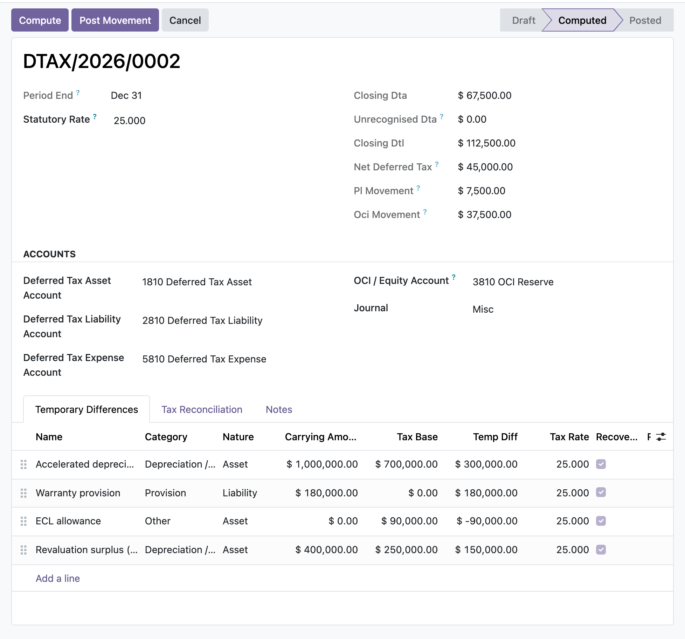

Compute deferred tax under the IAS 12 balance-sheet liability method, then post the period movement to profit or loss or to OCI as one balanced, audit-stamped journal entry.
Temporary difference equals carrying amount less tax base, classified taxable or deductible by nature, multiplied by the enacted rate. Assets, liabilities, and tax losses each follow the correct IAS 12.15-24 sign convention rather than a single flat formula.
Each line carries an opening position, and the run posts the closing-less-opening movement as one balanced entry. Deferred tax asset and liability legs are debit and credit natured, and the expense or OCI counterpart is the balancing plug, so the entry ties to the cent.
Once posted or reversed, the measurement fields on the run and its lines are locked at the ORM layer. Posting, reversal, and cancellation require the EH Accounting Manager group, and each action is timestamped with the acting user.
You open a deferred tax run for the reporting date, set the statutory rate, and list each temporary difference with its carrying amount and tax base: accelerated depreciation, a warranty provision, an ECL allowance, a revaluation surplus taken to OCI. Compute seeds any blank line rate from the statutory rate, rolls opening balances forward from the prior posted run, and flags any opening that does not tie out. You review the closing deferred tax asset and liability, the split of the movement between profit or loss and OCI, and the effective-tax-rate reconciliation. A manager posts, and one balanced journal is written and sealed. If a later period needs correction, a manager reverses it: the symmetric entry is posted a day after period end and both entries are preserved.
In the shipped code today, each one a place where a cheaper module silently does the wrong thing.
A deferred tax asset is recognised only to the extent of projected recoverable profit (IAS 12.24/34): the deductible difference is capped at the entered recoverable amount before the rate is applied, and the unrecognised portion is tracked separately for IAS 12.81(e) disclosure. A hard not-recoverable flag excludes the DTA entirely.
Each line compares its entered opening to the same difference's closing on the prior posted run, matched by name within the company, and raises a tie-out flag when they disagree so a keying error that would silently mis-state the movement is caught before posting.
Lines flagged as recognised in OCI have their movement routed to the OCI reserve rather than profit or loss (IAS 12.61A), and posting is blocked with an explicit message if an OCI line exists but no OCI equity account is configured.
Re-pointing a draft line's run_id at a posted run, resetting a posted run to draft, or deleting a posted run are each blocked, so a plain user cannot lift the figure freeze on a GL-backed movement through a raw ORM write.
A run whose net movement is nil raises rather than posting an empty entry, and a missing asset, liability, expense, OCI account, or journal each surface a named, explicit error at post time.
odoo 19 deferred tax, IAS 12 deferred tax odoo, deferred tax asset liability, temporary differences accounting, tax base carrying amount, effective tax rate reconciliation, deferred tax OCI, tax losses carried forward, balance sheet liability method, deferred tax journal entry, deferred tax recoverability, odoo 19 community accounting

Deferred tax run, computedThe IAS 12 closing deferred tax asset and liability, the split of the period movement between profit or loss and OCI, and each temporary difference with its carrying amount, tax base, and enacted rate.
Premium ERP Heritage modules that extend the same stack, each built to the same engineering bar.
The Australia country pack for the ERP Heritage Employment Hero integration
Sync certifications, qualifications and employee document metadata from the Employment Hero people platform into...
Sync Employment Hero leave categories, leave requests and leave balances into the standard Odoo Time Off app, wit...
Show the Hijri (Umm al-Qura) date alongside Gregorian dates across Odoo 17
Connect Odoo partner records to the Saudi SPL National Address service and the Wathq commercial registry